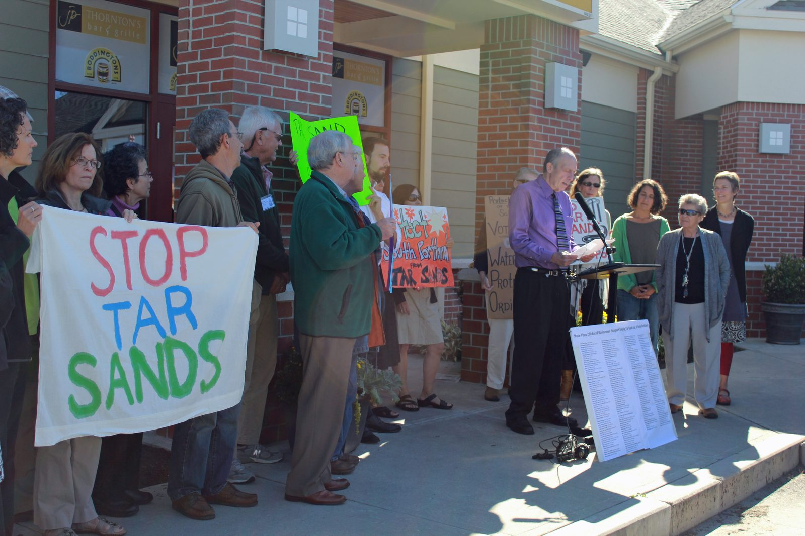
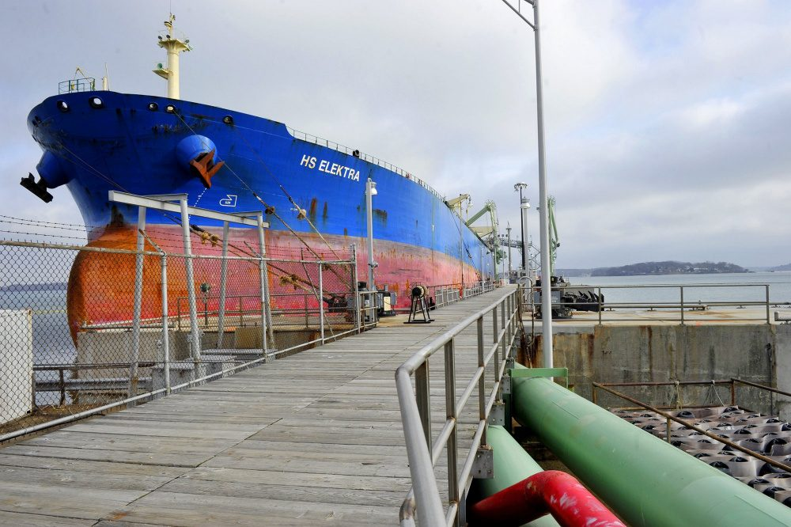
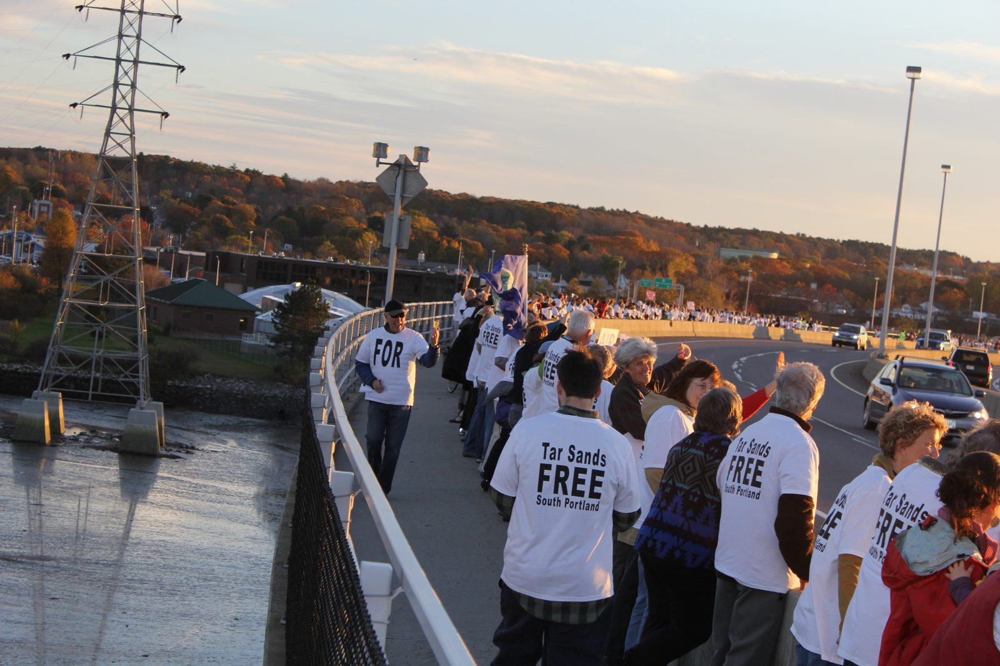
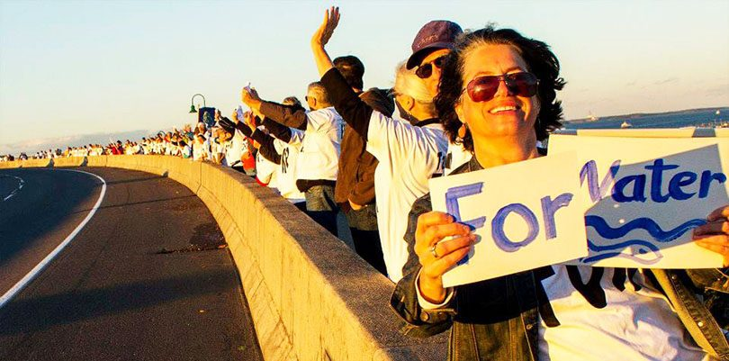
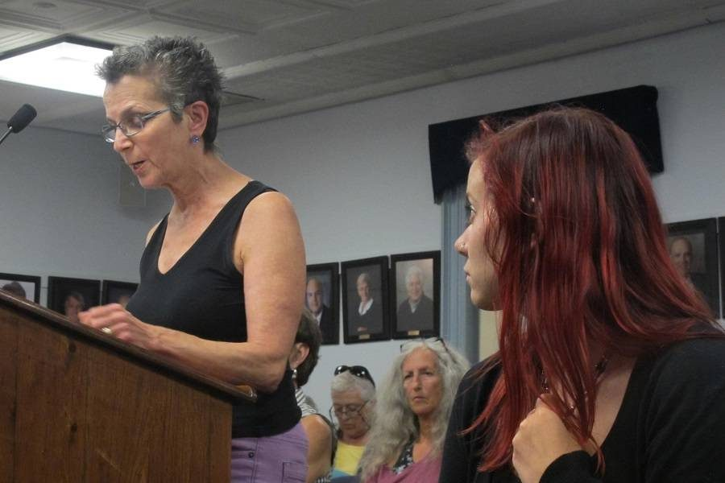

Clear Skies ordinance
History
When Portland Pipeline, a subsidiary of ExxonMobil and Suncor, tried to build a tar sands export terminal next to Bug Light Park on the shores of Casco Bay in South Portland, Maine, the community banded together to launch a successful community effort to block the oil industry. The oil company wanted to reverse the flow of an aging pipeline to transport tar sands oil, a thick, heavy sludge from the ravaged Alberta boreal forest in Canada, where the oil industry has destroyed an area the size of Greece. It would have then traveled through Canada, Vermont, New Hampshire, and Maine to be exported in tankers from South Portland. This 75-year-old pipeline currently passes through many water sources, including the watershed that feeds Sebago Lake, which provides drinking water to 20% of Maine’s population. Their plan was to build two 70-foot smokestacks on the shore of Casco Bay. These stacks would emit toxic carcinogenic fumes into our neighborhoods, threatening our health and imperiling our crucial marine and tourism industries.
A groundswell of community support resulted in the passage of South Portland’s Clear Skies Ordinance in 2014. It stopped corporate oil in its tracks. It was a battle to confirm our community’s right to self-determination, and to protect our planet from the dirtiest oil on earth.
Protect South Portland’s purpose is to ensure that permits are never issued for a tar sands oil project, and that a land use ordinance is put in place to prevent tar sands oil from ever being brought to our city. By working together, we can keep our community healthy, clean, and thriving!

The ordinance in plain terms

The Clear Skies Ordinance bans the loading of crude oil onto tankers in South Portland's harbor. The process of loading crude oil, especially crude derived from tar sands, is accompanied by the emission of toxic chemicals. The ordinance is based on the city’s home rule authority and its right to regulate air quality for the health and welfare of its citizens. Hence, its name.
How the ordinance came into being
In early 2013, South Portland residents began gathering in living rooms. Portland Pipeline, they learned, was planning to change from an importing to an exporting pipeline by reversing the flow of its line to bring tar sands oil to load onto tankers in our harbor. From those gatherings a grassroots movement developed and spread throughout the community.
South Portland residents volunteered to do door to door canvassing, letter writing, phone calling, lobbying city councilors, writing articles for local papers, and showing up at demonstrations, as well as at every city council meeting or workshop, for well over a year. With a David and Goliath fight on our hands, we put all our trust in the power of people working together to protect the city.
Initially, we lost at the polls by 193 votes in November 2013, when the Waterfront Protection Ordinance went down. But that defeat only reinforced our dedication to keep our grassroots effort going. The resulting reward for the determination of our citizens was the passage of the Clear Skies Ordinance by the South Portland City Council with a vote of 6-1 on July 21, 2014.


Twenty days later, when it officially became law, South Portland effectively shut down the possibility of bringing tar sands from Alberta, Canada to Casco Bay in Maine via the Portland Montreal Pipeline. This was a hard-fought victory, lasting many months. What started with a small group of people grew into a determined, citywide effort, and it was the result of citizen power rising up against the power of Big Oil.

South Portland takes on Big Oil
Portland Pipeline sued the City of South Portland in Federal Court on nine points. One of these cited the Interstate Commerce Clause of the Constitution, and alleged that the city had overstepped its authority to legislate for a company engaged in business across state borders. After a long and tortuous process of discovery, the judge ruled for the city on eight of the nine points but reserved the constitutional question for further proceedings. Two bench trials were held over a period of about ten months, the last of which occurred in June 2018 and lasted four days.
Finally, in late August 2018, the judge ruled in favor of South Portland, declaring that the Clear Skies Ordinance did not violate the Commerce Clause. This is a victory for local authority in matters of the health and welfare of its citizens and has been of great interest to other U.S. communities fighting pipelines and transmission lines that would affect the quality of their environment.
SUCCESS: Portland Pipeline appealed Judge Woodcock’s decision to the First Circuit Court of Appeals in Boston. Both parties filed their opinions with the court. After a battle of 8 years, the Portland Pipeline withdrew its last appeal to nullify the Clear Skies Ordinance. The long road that led us to this success has been paved with the thousands of people who have contributed in so many ways. South Portland residents spent numerous hours canvassing, making phone calls, writing letters to the editor, attending rallies and city council meetings and donating what money they could. Our city is committed to keeping our neighborhoods safe and our air clean.
More info
- South Portland, pipeline company square off before high court — Sean Murphy, Sept. 17, 2020
- Federal appeals court asks Maine's top judges to rule on South Portland pipeline case — Kelley Bouchard, Jan. 15, 2020
- Related articles: South Portland’s ‘Clear Skies’ ordinance survives challenge — Aug. 24, 2018
- South Portland's Tar Sands Ban Upheld in a 'David vs. Goliath' Pipeline Battle — Sabrina Shankman, Aug. 28, 2018
- This Coastal Town Banned Tar Sands and Sparked a War with the Oil Industry — Sabrina Shankman, Nov. 2, 2017